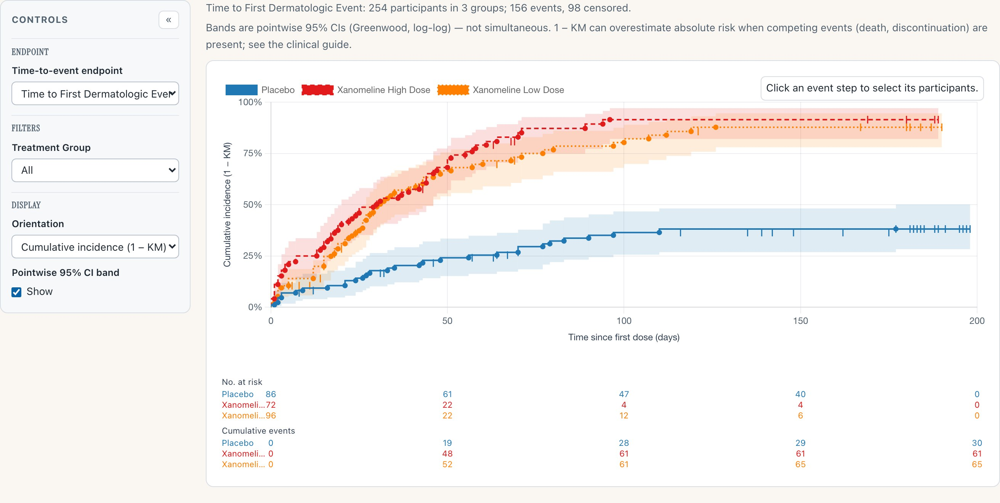
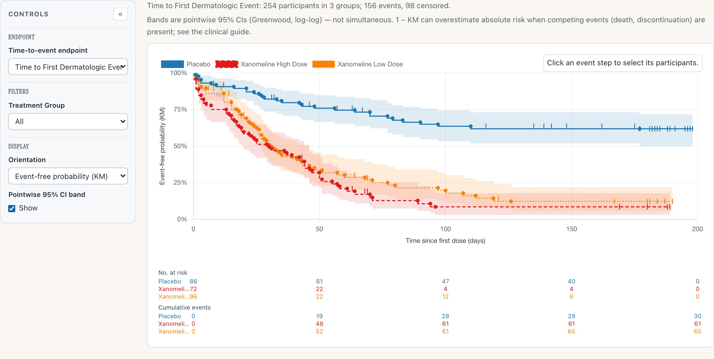
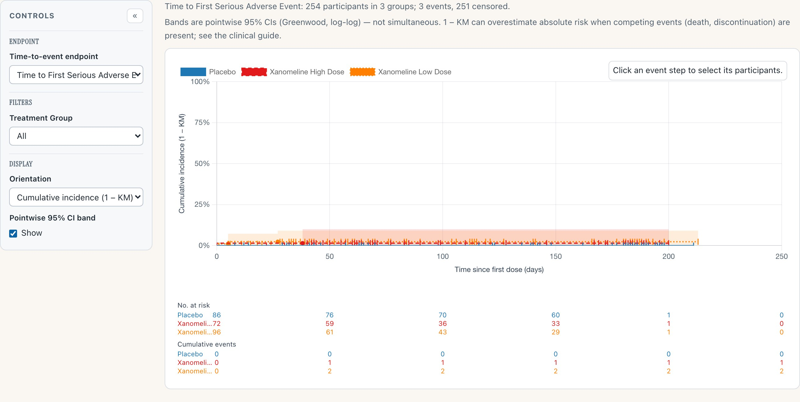
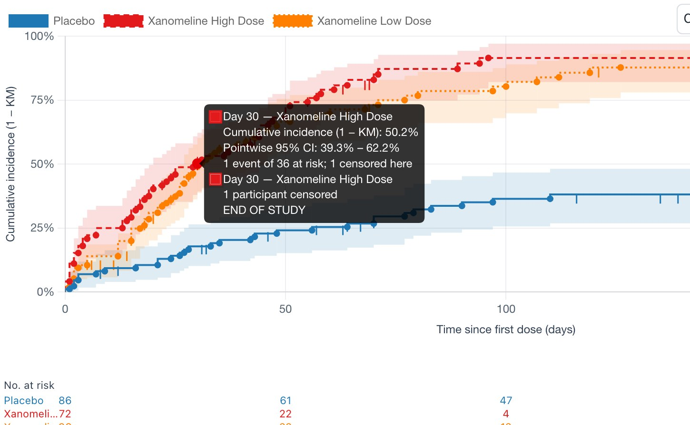
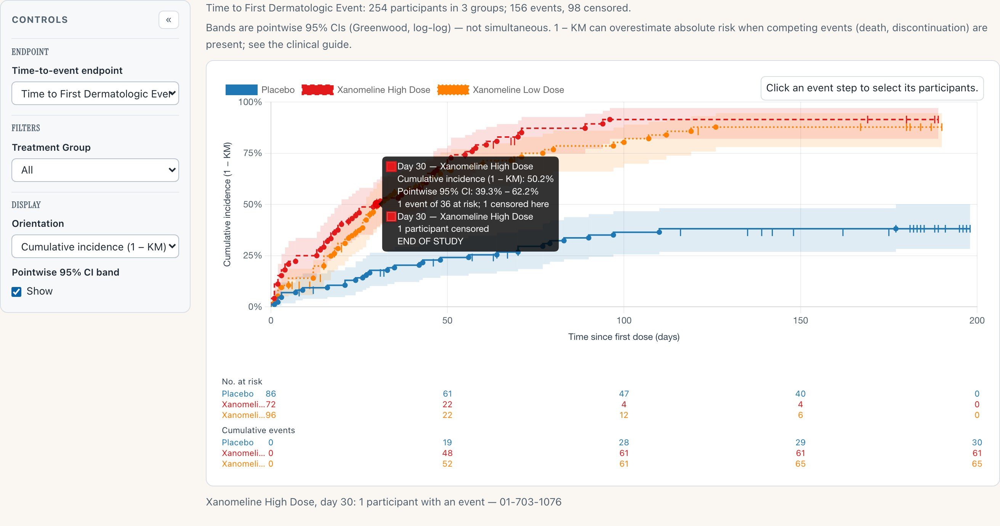

safety.viz release review 2026-08-15
The gallery learns to answer "how long until…". One new renderer — the Time-to-Event Explorer, the thirteenth in the gallery — brings Kaplan–Meier displays to the safety portfolio: step curves with censoring marks, pointwise confidence bands, and the at-risk table the FDA Safety Tables & Figures guide mandates beneath every time-to-event plot. Each section below is a behaviour, a capture of it running, and a way into the live demo to check it yourself. Every capture was taken on 15 August from the live dev deploy — the build this cut promotes.
1 new renderer — 13 in the gallery 1 250 unit + 252 browser tests estimator cross-validated against survival::survfit promotes dev → main via the v1.7.0 RC
One estimator pass produces everything on screen: the step curves by treatment group, the censoring tick marks along them, the pointwise 95% confidence bands (Greenwood variance, log-log transform — the survival::survfit default family, cross-validated against it), and the No. at risk / Cumulative events strip beneath. Because the table is derived from the same pass as the curve, the two cannot disagree.

1 2 3 4Why it matters
Time-to-first-event is the display safety review reaches for when incidence tables disagree about "how often" because the arms differ in "how long". The demo endpoint is the CDISC Pilot 01 study's actual safety concern — time to first dermatologic event on a dermal patch — and the arms genuinely separate.
The renderer consumes an ADTTE-shaped analysis dataset: the clinical derivation of "first qualifying event" stays upstream with the data owner, where it belongs. It ships Experimental pending review of design decisions D1–D6.
Try it
Open the Time-to-Event ExplorerThe default display is cumulative incidence (1 − KM) — risk accumulating upward, the direction safety questions are asked in. One control flips to event-free probability (KM) — the classic survival curve stepping down. The axis always names the estimator in force, so a screenshot of either view carries its own definition.

The same endpoint, same estimator pass, flipped to event-free probability. Nothing else moves: bands, censor marks and the strip table carry over, and the y-axis label changes to say exactly what is now plotted. The header's caveat is standing, not decorative: 1 − KM can overestimate absolute risk when competing events are present — censoring here is end-of-study regardless of reason, including death, which is precisely that situation — and the clinical guide walks through it.
Why it matters
Reviewers argue about up-versus-down more than any other property of this display. Offering both, with the estimator named on the axis in every state, means the choice is presentational — the statistics cannot silently change under a toggle.
Try it
Open the demo, find Display → OrientationThe demo ships three endpoints, and one is deliberately sparse: time to first serious adverse event — three events across 254 participants. The wide, hugging-the-floor band that produces is not a rendering problem. It is the correct display for a rare endpoint, and the renderer draws it rather than prettifying it.

Three events, 251 censored. The curves barely leave the floor, the band is wide and ends where the data end, and the strip table says plainly that almost nobody had the event. This is the display doing its job: a rare-endpoint KM plot that looked confident would be lying. The header counts events and censored up front, so the sparseness is announced before the eye reaches the curve.
Why it matters
Safety endpoints are often rare by construction. A renderer that only looks good on rich endpoints teaches its readers to over-trust thin data; this one was shipped with the sparse case as a first-class demo endpoint precisely so the honest behaviour is on display.
Try it
Open the demo, switch the endpointEvery step answers questions. Hover an event step and the tooltip gives the day, the estimate with its pointwise CI, and the risk-set arithmetic at that moment. Click it, and the participants behind that step are named — the same drill-down-to-the-person discipline the rest of the gallery holds.

Hover: day 30 on the high-dose arm — the estimate (50.2%), its pointwise CI (39.3–62.2%), and the arithmetic (1 event of 36 at risk; 1 censored here, with the censoring reason). The tooltip reads as a sentence a reviewer could quote.

Click: the step's participants are named beneath the chart — here, day 30's single event is participant 01-703-1076. The aggregate curve stays connected to the people in it.
Why it matters
A KM curve is an aggregate over individual exits, and safety review eventually needs the individuals. Keeping "which participants are behind this step" one click away is what makes the display a working tool rather than a figure.
Try it
Open the demosite/data/adtte.csv, derived from pharmaverseadam adae + adsl (CDISC Pilot 01): three endpoints — first dermatologic event, first serious AE (the sparse case), first any TEAE. The KM estimator is cross-validated against survival::survfit on this data.(Upcoming) heading per the program convention.dist/safety.viz-1.7.0/ vendored, fixtures repointed.Where this fits
This page is the review surface for the v1.7.0 release candidate (dev → main). The release notes live in the RC PR's body and in NEWS.md, and publish on the v1.7.0 tag when it merges — on your approval, via the attested lane, and not before.
The rest of the candidate